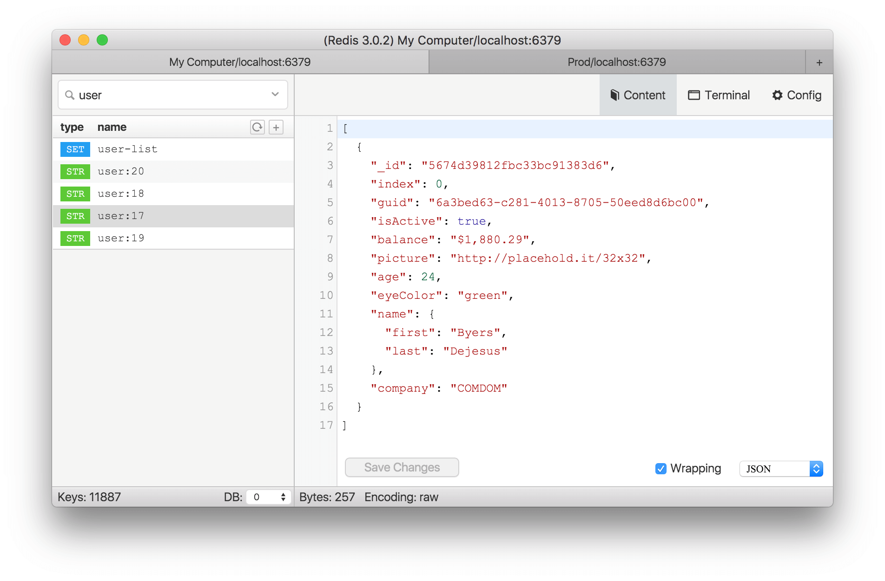
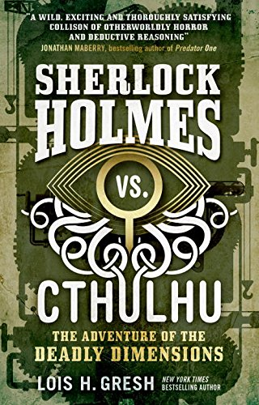
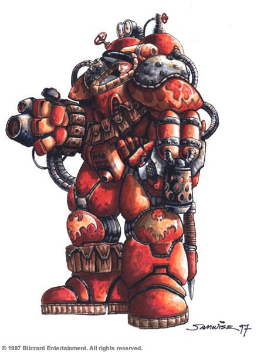

JS is in the browser
JS is getting everywhere else
Internet of Things
React.native
...so you can use both left-pad and CGI.pm
...or something more reasonable
...but not only
Electron
Some editors are extendable with JS

Transpilers
People compile stuff to JS so much we have a weird name for it
People are even compiling JS to JS
JS is not fun for a lot of people
- NQP
- Perl 6
- NQP ---> QAST
- Perl6 ---> QAST
is_qast(
QAST::Block.new(
QAST::Op.new(
:op('if'),
QAST::IVal.new(:value(1)),
QAST::IVal.new(:value(2))
)
),
2,
'if with IVal, 2-operand');
say(nqp::add_i(12, 3));
nqp::setinvokespec(Foo,Foo,'$!code_ref',nqp::null());
QAST::Op.new(
:op('add_i'),
QAST::IVal.new(:value(12)),
QAST::IVal.new(:value(3))
)
is(nqp::div_i(9, -4), -3, 'nqp::div_i rounds down');
Sometimes once building blocks are done, stuff works

If I misunderstand some small detail...

my int $c = 100 + 200;
nqp::add_i(100, 200)
(100+200)|0
my $list = gather {
say "#1";
take 123;
say "#2";
take 456;
say "#3";
take 789;
};
say($list[1]);
say($list[2]);
say($list[3]);#1 123 #2 456 #3 789
async function onEveryBlock() {
let ret = await foo.everyMethod();
}
function suspendExecution() {
return new Promise(function(resolve, reject) {
//when we want to resume the coroutine we call resolve
});
JavaScript is evolving
towards becoming a better Perl 6 target
Closure shenanigans are the suspect
I need to fix that
Tree shaking solves the problem for other languages
Make a graph of what uses what and get rid of the dead code